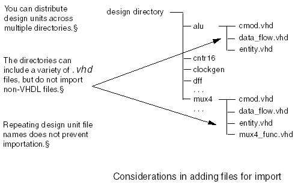
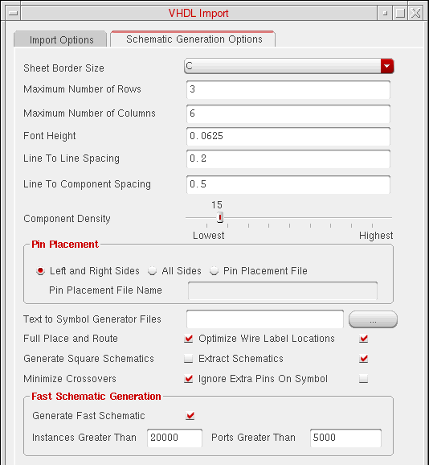
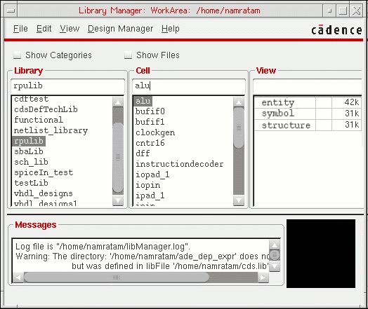
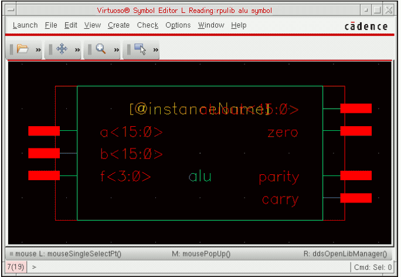
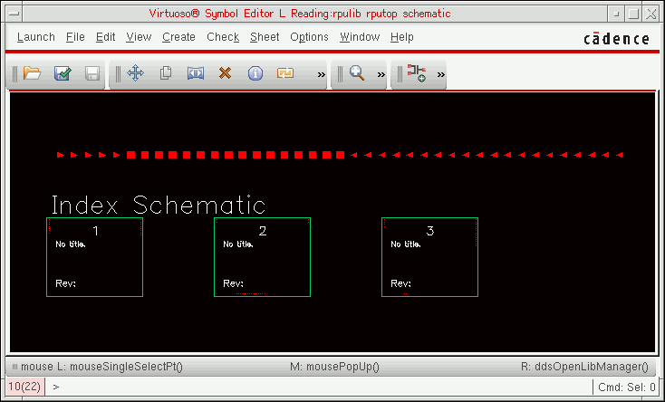
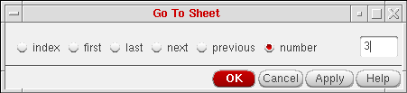
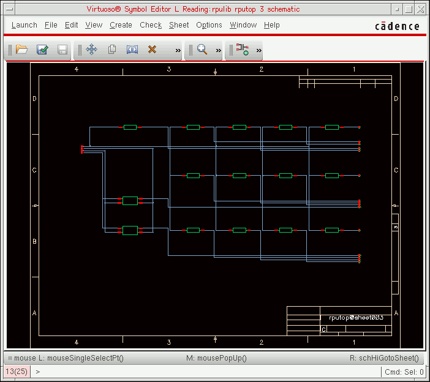
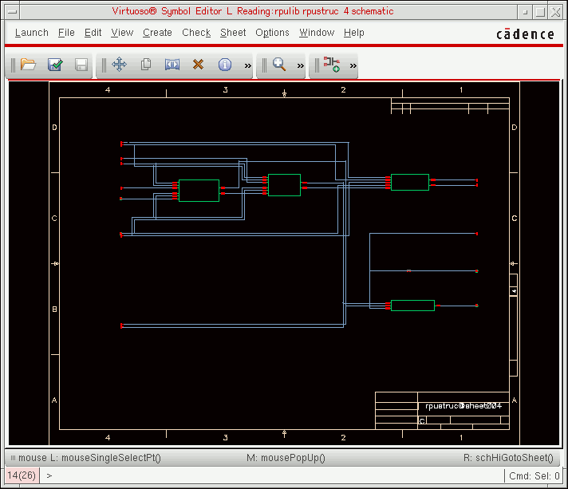
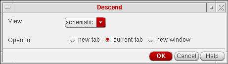

5
Importing a Complex VHDL Design (RISC Processor Unit)
This chapter discusses the following:
- Overview
- RPU Design Structure
- Setting Up the VHDL Import Form
- Specifying Schematic Generation Options
- Creating a Target Library
- Viewing Error and Log Files
- Viewing the Results
Overview
This chapter describes how you can import a larger, more complex VHDL design. This example uses the design of an
Before you begin this example, use the Library Manager to modify your cds.lib file to include the five minimum required libraries, basic, sample, US_8ths, std, and ieee. The process for referencing these libraries is described in Chapter 2, “Getting Started with VHDL In.”
RPU Design Structure
This sample design is included in the Cadence software /tools/dfII/samples/vhdlin/Test3, where <dfII_install_dir> is dfII installation directory. Copy this design directory into your own account. In the following example, the RPU design starts in the ~/vhdlin_examples/rpu_design directory.
The RPU design consists of I/O connection pads and the main design.
The design includes 11 unique functional elements:
- reg16 (16-bit register)
- reg16c (reg16 with carry)
- cntr16 (16-bit counter)
- mux2 (2:1 multiplexer)
- dff (D flip-flop)
- alu (Arithmetic Logic Unit)
- clockgen (clock source)
- reg4c (4-bit register with carry)
- instructionDecoder (an array of logic)
- regArray (local data storage)
- mux4 (4:1 multiplexer)
Setting Up the VHDL Import Form
Although you can run VHDL In from VHDL Tool Box, this example starts from the /usr1/vhdlin/example. Before you start, copy the design example from the <dfII_install_dir>/tools/dfII/samples/vhdlin directory and keep it in your own account.
-
In the CIW, select File – Import – VHDL
The VHDL Import form opens. -
Double-click entries in the Files List Box until the design directory is displayed.
To move the display up one directory, click ../. To display the contents of a directory, click the directory name. -
In the Target Library Name field, enter the name of the target library
(rpulib). -
Set the Import Structural Architectures As cyclic field to schematic.
You can leave all other options at their default setting. -
To add the design’s entity and architecture files to the Import Files List Box, double-click each file name in the Files List Box.
In this example, the entity and architecture for each component are contained in a single*.vhdfile.
When you add files to be imported, keep the following items in mind.-
The VHDL Import form shows only the
.vhdfiles in each directory. If you are using other tools or techniques, some of your directories might include C model files and Verilog files.
Even though these files end in.vhd, do not import them. VHDL In processes only VHDL files. -
As you add more and more design files from the design subdirectories, you might discover that different design elements use the same file names.
For example, you might call all the architecture filesdata_flow.vhd,and all the entity filesentity.vhd,and put both sets of files under directories named after the component. The VHDL Import form keeps track of which directory each file comes from and can tell the different files apart. - If you cannot remember if you have added a file, select it again, because VHDL In ignores multiple requests to add the same file.
The following figure illustrates and summarizes these three considerations.
 -
The VHDL Import form shows only the
Specifying Schematic Generation Options
Now you are ready to set the schematic generation options. The three-element adder design is so simple that a schematic generated with just the default settings still looks reasonable. The RPU design, however, is larger and more difficult to place properly.
If you do not set the schematic generation options, VHDL In draws the entire design onto one schematic sheet of infinite size.
- On the VHDL Import form, click the Schematic Generation Options tab.
- Set Sheet Border Size to C.
- In Maximum Number of Rows, enter 3.
- In Maximum Number of Columns, enter 6.
-
Set the Component Density slider to 15.
The last three options specify a reasonable number of large components that can be placed comfortably on a C-size schematic. -
Deselect Generate Square Schematics.
The standard Cadence schematic sheet frame is rectangular, so turning off this option improves the use of schematic sheet space
. -
Click OK.
The form closes. - In the VHDL Import form, click OK or Apply.
Creating a Target Library
Because you specified a target library name in the (rpulib), a dialog box opens, asking you if you want to create the new library. When you click Yes in the dialog box, the New Library form opens.
A message appears in the CIW display area after the new library is created:
Created library "rpulib" as ".../vhdlin_examples/rpu_design/rpulib"
Viewing Error and Log Files
A message in the CIW display area tells you that the VHDL Import process has started. When it finishes, you are presented with a dialog box. If the import process is successful, the box asks if you want to view the log file. If the import process fails, the box asks you if you want to view the error message file. For examples of these and other dialog boxes, refer to
If you receive an error message, go back to the VHDL Import form. After fixing the problems indicated, select a new list of design files to import and run VHDL In again.
The following figure is the VHDL Tool Box status window display of the beginning of the log file for this VHDL import example. The window refers to the VHDL Tool Box even when you start the software from the CIW. Select File – Close to close the log window.
Viewing the Results
Once the import process has finished successfully, you can examine the target library to check the result.
Accessing the Symbol Editor
You can view the symbol view of a
-
In the CIW, choose Tools – Library Manager.
The Library Manager window opens.
. -
In the Library column of the Library Manager window, enter rpulib in the Library text field and press Return or click the rpulib library.
The Cell column displays all the cells of the RPU design elements. -
To display the cellviews of the alu design, click the alu cell name.
The View column displays three cellview names: dataflow, entity, and symbol. -
Double-click the view name symbol.
The Symbol Editor opens, displaying the symbol for alu.
Each element in this design now has its own OA symbol. If you do not like how the symbols look, you can edit them. - To close the Symbol Editor, select File – Close.
Viewing the Schematic
In this procedure, you examine the schematic views that VHDL In has produced for rpustruc and rputop designs. rpustruc is just the RISC processor design itself. rputop includes rpustruc surrounded by I/O pads.
VHDL In converts all capital letters in the cellview names to lowercase in the schematic.
-
In the CIW, select Tools – Library Manager.
The Library Manager window opens. -
In the Library list box, click the rpulib library name.
The Cell list box displays nine cells for the rpulib library. -
In the Cell list box, click the rputop cell.
The View list box displays three cellview names for the RPU design: entity, schematic, and symbol. -
In the View list box, double-click the schematic cellview of the rputop cell to view the schematic of the cell.
The Virtuoso Schematic Editor L opens, displaying the schematic of rputop.
VHDL In, following the criteria set up under the Schematic Generation Options tab, has divided the top-level design into four sheets. Sheets 1 through 3 include only I/O pads. -
In the schematic window, select Sheet – Go To, and select Sheet 3.
Schematic sheet 3 for rputop is shown below:
. -
From the Library Manager double-click the schematic view for rpustruc@sheet004. This sheet displays rpustruc and some I/O pins.
 - In the schematic window for the rpustruc index schematic, select Sheet 5.
-
Click Edit – Hierarchy – Descend Edit, and click OK from the Descend form.
The Virtuoso Schematic Editor L opens Sheet 6 of rpustruc.
The following figure shows how VHDL In has positioned a portion of the RPU design in a C-size schematic frame and entered the design name in the information section.
To see how VHDL In has routed nets and placed labels, press z to zoom in on one section of the schematic.
If you are dissatisfied with the decisions VHDL In has made, you can rerun VHDL In with different schematic generation options, or you can use the schematic editor to make changes to the schematic.
If you descend further into one of the design elements, you can view the entity and dataflow (architecture) text files.
Return to top